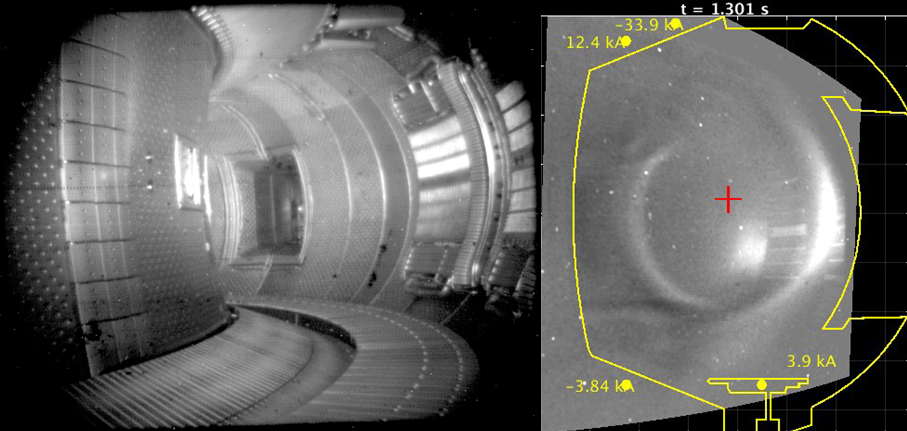

{kind=link}
Florence de Crécy a soutenu sa thèse en 2013 au LMFA. Elle travaille maintenant chez CS Communication et Systèmes.
Jorge Morales a soutenu sa thèse en 2013 au LMFA. Il travaille maintenant au CEA Cadarache.
F. de Crécy - CA Communication et Systèmes
Pour commencer, mon parcours après la thèse sera détaillé. Je présenterai
ensuite le projet ProLB sur lequel je travaille actuellement. ProLB est un
logiciel de CFD utilisant la méthode de Lattice Boltzmann qui est développé
par mon équipe. Enfin, j’expliquerai mes activités au sein de ce projet. Ce
sera l’occasion de partager avec vous mon expérience sur le parcours des
ingénieurs docteurs en entreprise.

J. Morales - CEA Cadarache
Pour commencer une introduction sera faite sur la fusion thermonucléaire par confinement magnétique. Afin de présenter mon poste actuel au CEA je donnerai un aperçu de mes activités de recherche. Parmi celles-ci on discutera l’opération du tokamak WEST et mes activités en appui au futur réacteur expérimental ITER. Ensuite je détaillerai mon parcours depuis ma thèse au LMFA jusqu’à ma position actuelle au CEA. Pour conclure j’aimerai partager quelques réflexions et échanger avec vous sur le métier de chercheur.
